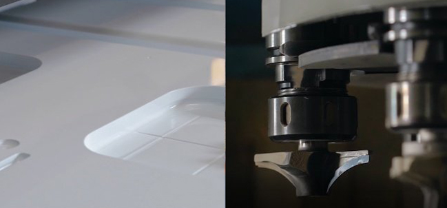

Наш процес створення меблів відбувається наступних чином:
Створення нового комплекту - трудомісткий і тривалий процес. Ми розповімо вам, які етапи проходять наші комплекти до надходження в продаж.

1) Виникнення ідеї
Будь-творчий процес починається з ідеї. При розробці концепції нового комплекту меблів для ванної кімнати головний дизайнер черпає натхнення з навколишнього світу, архітектури та предметів мистецтва. Крім того, вона регулярно відвідує тематичні виставки, проходить навчання, постійно вивчає і відстежує тенденції в дизайні. Важливу роль при розробці нового гарнітура грає спілкування з клієнтами. Для нас, як для виробника, зворотний зв'язок відіграє важливу роль
Наша основна мета - виробляти і надавати гарні меблі, яка несе емоції і враження, але при цьому зручна і функціональна.

2) Проектування, підбір матеріалів
Після появи концепції нового продукту починається етап проектування. Дизайнером створюються ескізні малюнки майбутнього комплекту, конструктори роблять попередні розрахунки і креслення. Далі за проведеними розрахунками робляться перші ЗD-моделі. Підбираються матеріали і фурнітура. Ми ретельно підходимо до вибору постачальників. На нашому виробництві є власна лабораторія для оцінки якості сировини, що поставляється. Тільки провівши ряд випробувань, ми вибираємо ті матеріали, що відповідає нашим стандартам якості. Розробка креслень і підбір матеріалів може тривати від 2-х тижнів до 3-4 місяців. Все залежить від складності технології виготовлення нового продукту.

3) Створення прототипу
Після затвердження креслень і узгодження обраних матеріалів, ми приступаємо до створення прототипу. Головне завдання на цьому етапі реалізувати ідею дизайнера, створивши при цьому функціональну і зручні меблі. Завдяки кваліфікованим фахівцям і сучасному обладнанню, ми можемо реалізовувати нестандартні дизайнерські рішення. Коли на виробництво надходить вся необхідна сировина для випуску прототипу, починається його виготовлення.
По готовності передсерійний зразок проходить ряд перевірок і випробувань. Оцінюється його функціональність, зовнішній вигляд, поєднання матеріалів і кольорів. Виявляється наявність шагрені *, деформацій. Якщо між ящиками або дверцятами занадто великі щілини або зазори, то комплект відправляється на доопрацювання. Період виготовлення і тестування може займати від 2-х тижнів до 3-4 місяців. Якщо продукт має складну технічну реалізацію, то може бути виготовлений і протестований не один прототип. Так як на цьому етапі нас може очікувати багато сюрпризів.

4) Запуск серійного виробництва
Коли предстерійний зразок відповідає очікуванням конструктора і дизайнера, меблі запускається в серійне виробництво. На нашому сайті розміщуються красиві ЗD-візуалізації, починається його просування відділом маркетингу: розміщення новин в соціальних мережах, інформування клієнтів, друк оновлених каталогів. Готовий до продажу гарнітур ми виставляємо в нашому шоу-румі.
В процесі розробки і створення меблевого комплекту бере участь вся компанія. Основна робота по створенню нової моделі виконується дизайнером і конструкторами. Одягнув закупівель відповідає за своєчасну поставку матеріалів. Співробітники виробництва та збирання реалізують дизайнерсько-конструкторський задум, роблячи готовий продукт. Відділ маркетингу спільно з відділом продажів розробляє стратегію просування новинки. Для того, щоб у вашій ванній з'явилася нова меблі задіяний працю десятків фахівців.